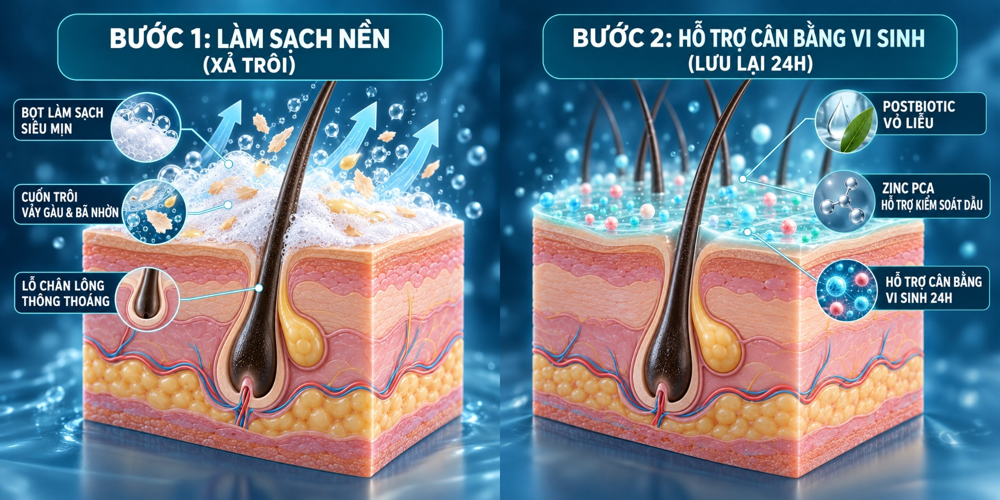
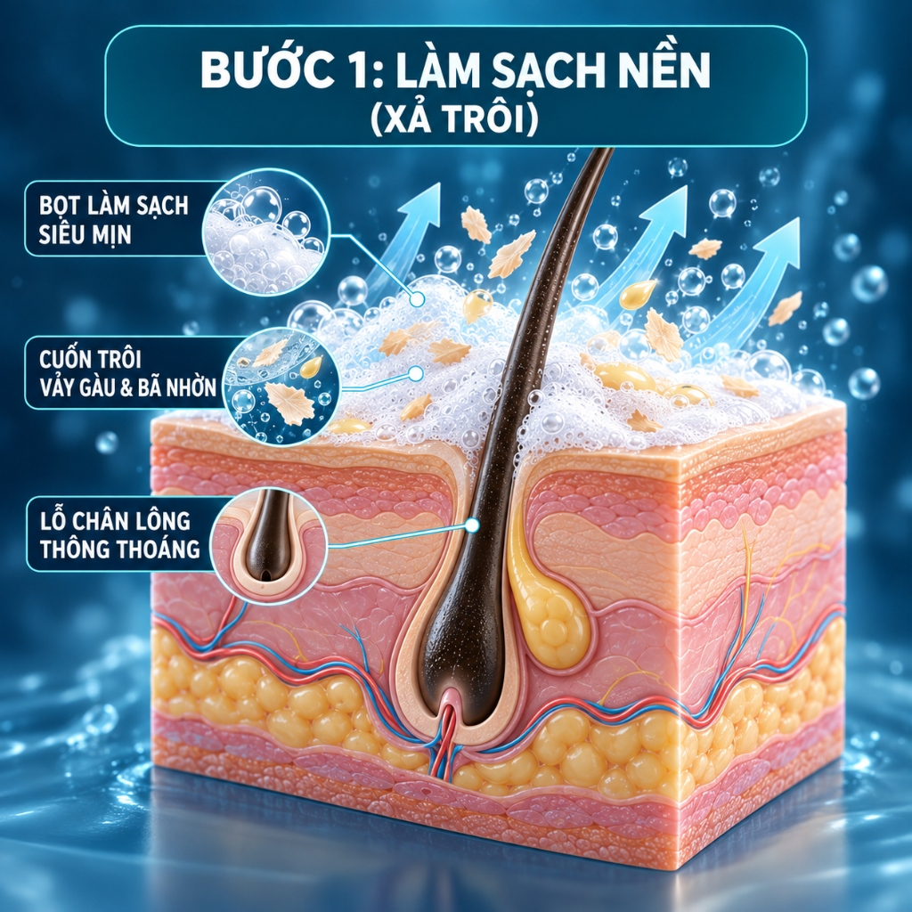
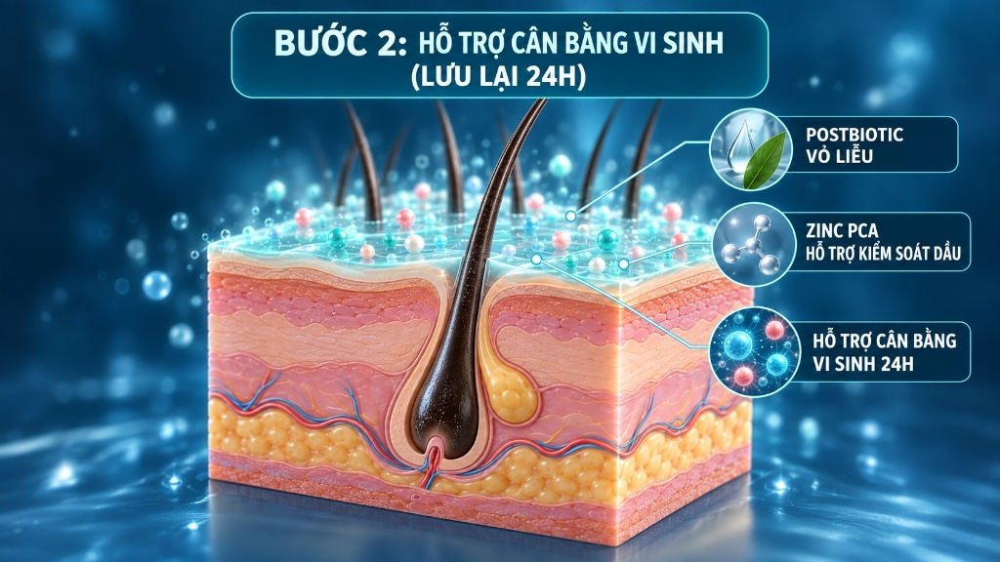
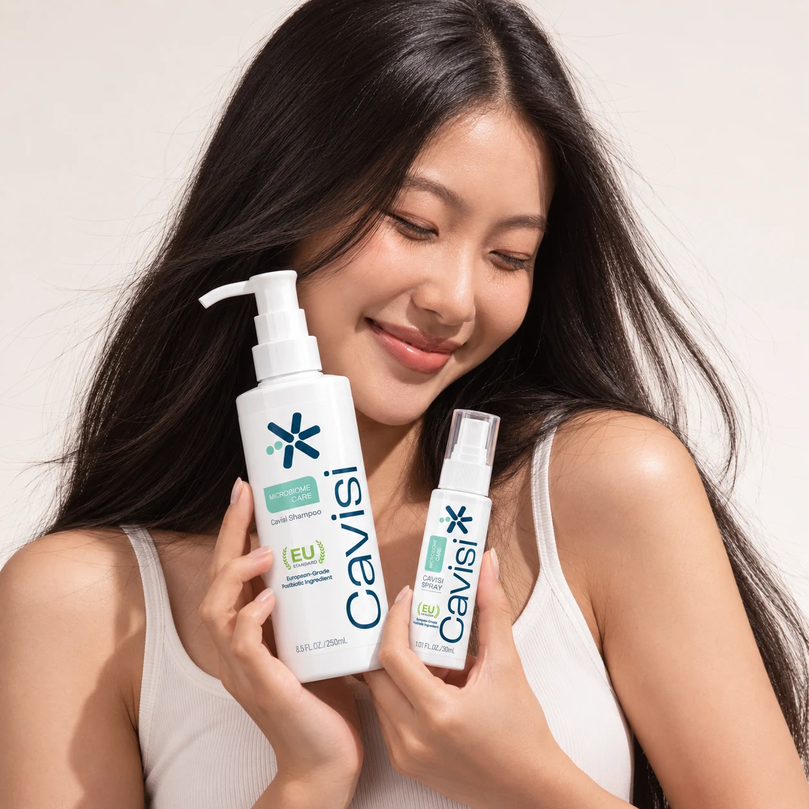

Thời gian tiếp xúc ngắn
Dầu gội là sản phẩm Rinse-off. Các hoạt chất chăm sóc khó có đủ thời gian phát huy tác dụng bảo vệ lâu dài khi bị xả sạch ngay sau đó.
Khoa học hệ vi sinh
Da đầu không đơn thuần là nơi mọc tóc — đó là một hệ sinh thái vi sinh sống động. Gàu và bã nhờn bùng phát khi hệ sinh thái này mất cân bằng. Cavisi giải quyết tận gốc bằng chu trình hai bước độc bản: làm sạch nền trước, tiếp nối bằng dưỡng chất lưu lại suốt 24 giờ.
01 / Vấn đề cốt lõi
Phần lớn sản phẩm trên thị trường dồn toàn bộ nhiệm vụ vào một chai dầu gội đơn lẻ. Nhưng sự thật là: dầu gội chỉ ở trên da đầu bạn khoảng 2 phút trước khi bị nước cuốn trôi hoàn toàn.
Dầu gội là sản phẩm Rinse-off. Các hoạt chất chăm sóc khó có đủ thời gian phát huy tác dụng bảo vệ lâu dài khi bị xả sạch ngay sau đó.
Cố gắng trị gàu bằng chất tẩy rửa mạnh thường làm tổn thương lớp màng ẩm tự nhiên, khiến da đầu khô căng và tiết dầu nhiều hơn để bù đắp.
Sau khi gội, da đầu tiếp tục chịu mồ hôi, khói bụi và mũ bảo hiểm suốt cả ngày mà không có lớp màng bảo vệ nào che chắn.
02 / Sơ đồ khoa học 3D
Mô phỏng 3D sự phối hợp nhịp nhàng giữa bước làm sạch sâu nền da đầu (Rinse-off) và bước xịt dưỡng cân bằng hệ vi sinh lưu lại (Leave-on).

🔍 Phóng to chi tiết 3D
🔍 Chạm phóng to HDRinse-off Scalp Cleanser · 250ml

🔍 Chạm phóng to HDLeave-on Microbiome Tonic · 30ml
03 / Đột phá sinh học
Cavisi sử dụng dịch lọc lên men vi sinh tự nhiên để tạo môi trường thuận lợi cho vi sinh vật có lợi, thay vì tiêu diệt mù quáng mọi thứ trên da đầu.
Bản chất
Postbiotic là các dưỡng chất có hoạt tính sinh học sinh ra từ quá trình lên men (chứa peptide, acid hữu cơ, enzyme), hoàn toàn ổn định và an toàn trong mỹ phẩm.
Nguồn gốc
Chiết xuất lên men Lactobacillus/Salix Purpurea Bark Ferment Extract kết hợp acid tự nhiên, giúp làm dịu và củng cố hàng rào bảo vệ da đầu.
Tác động
Hỗ trợ ức chế môi trường phát triển của vi nấm Malassezia, ngăn chặn vòng lặp gàu ngứa bùng phát mà không làm da đầu khô rát.
